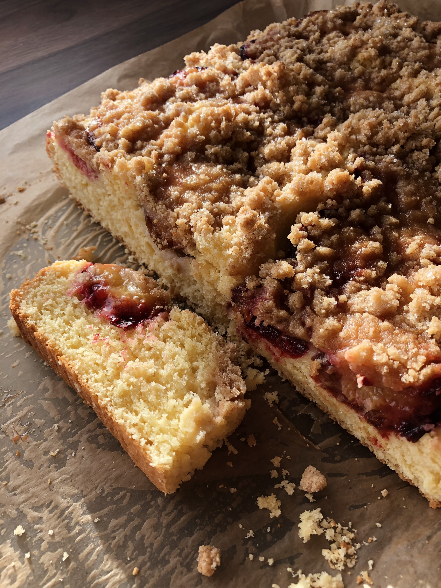
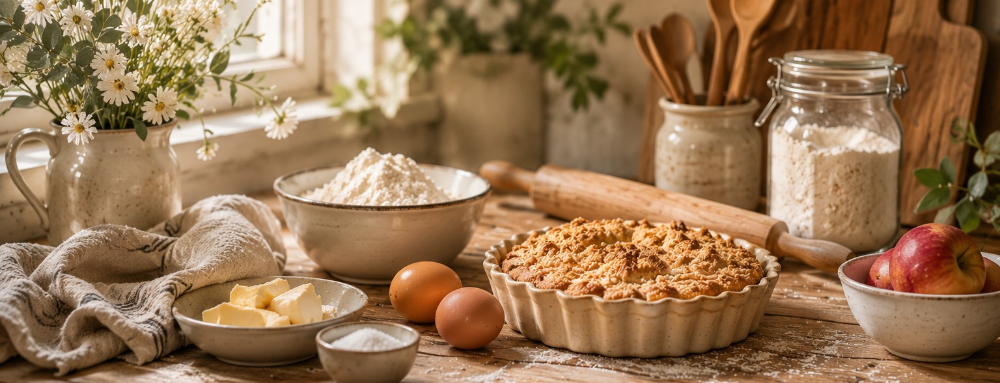

Drożdżowiec ze śliwkami
Puszyste ciasto drożdżowe z soczystymi śliwkami i cynamonową kruszonką.
175°C
·
40–50 min pieczenia
Przejdź do przepisu →


Puszyste ciasto drożdżowe z soczystymi śliwkami i cynamonową kruszonką.

Puszysty chlebek drożdżowy z masłem serowo-ziołowym, czosnkiem, cheddarem i parmezanem.

Miękkie ciasteczka z borówkami i kawałkami białej czekolady.
Cześć! Mam na imię Ola. Uwielbiam piec i dzielić się sprawdzonymi przepisami, które przygotowuję dla rodziny i przyjaciół.
Każdy wypiek znajdujący się na blogu został dokładnie przeze mnie dopieszczony.
Mam nadzieję, że znajdziesz tutaj inspirację i będziesz wracać po więcej.